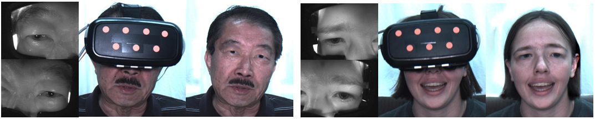
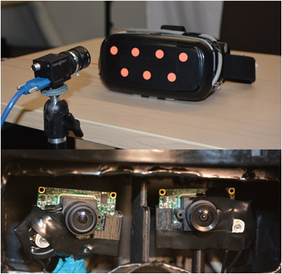
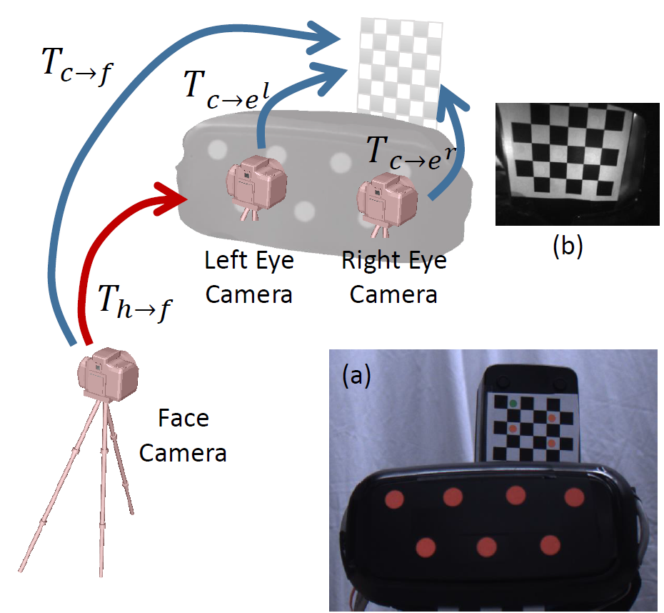
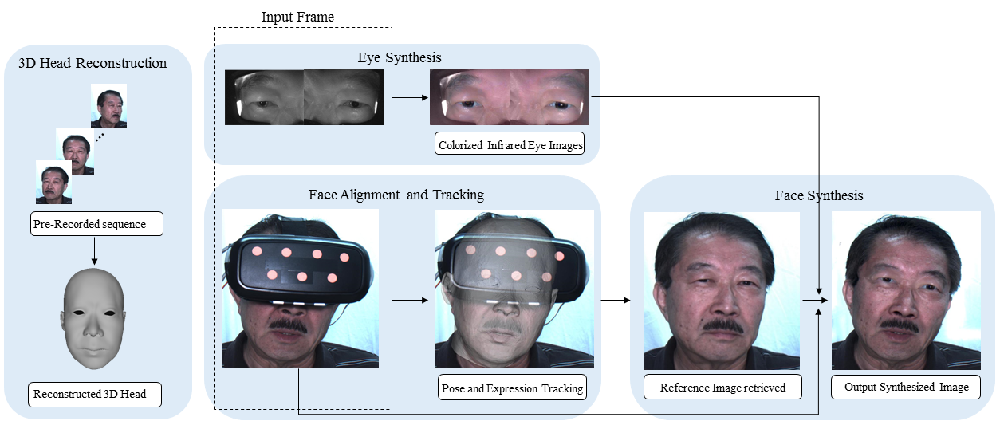

|
Synthesizing Realistic Facial Images for Head-mounted Displays(mobile setup) |
|
 |
|
System Setup |
|
In our mobile setup, we used a VR-headset case, one of these types that allow a user to insert a mobile phone to create a low-cost head-mounted display (HMD).
We insert two small VGA cameras inside the shell to observe the eye region.
In this mobile setup, a user should wear our modified headset as usual, a fixed desktop camera is used to observed the user.
This is similar to a regular video conference setup except that the user's face is severely occluded. |
Demonstration of the System Setup
 |
|
|
|
System Calibration |
|
We first have to geometrically calibrate all cameras.
While the fixed setup is easy to deal with, the mobile one is more difficult since the HMD can move all the time.
We describe our procedure for the mobile system calibration and tracking.
We first intrinsically calibrate all the cameras using standard techniques.
We then print out a small checkerboard pattern and attached it to the VR-display case so that one half of the patterns are visible to the face camera and the other half is visible to the NIR eye camera.
Since the size of the grid is known, we can estimate the pose of these cameras using a Perspective-n-point algorithm (PnP).
Using PnP, the face camera's pose in the HMD space can be estimated.
Using the face camera as a bridge, we can now calculate the eye-camera's pose in the space of HMD.
Now we can remove the checkerboard pattern (since it will occlude the eye cameras).
At run time, the face camera will track the HMD's pose using these color dots and therefore the pose of the eye cameras.
|
|
 |
|
|
|
Pipeline |
|
Our system consists of four modules.
We reconstruct a personalized 3D head model from a video
sequence captured off-line in the first module.
The 2D facial landmarks and 3D sparse point cloud are
integrated together in our optimization algorithm to obtain
an accurate head model. In the second module,
we propose a novel algorithm to align 3D head model to the
face image that has been severely occluded by the HMD.
Instead of fitting the head model to the small lower face
portion for each image frame, our algorithm first estimates
the transformation between the HMD and the head model
once a user put on the HMD. The transformation is combined
with the estimated HMD pose for each image frame to
align the head model robustly. The facial expression weights
are then computed to obtain a personalized head model
with expression changes. In order to generate realistic face
images without occlusions, in the third module,
we apply a boundary constrained warping algorithm based
on the reference image retrieved from the pre-captured data
set. In the fourth module, we propose another
novel algorithm to process the warped near-infrared eye
images. The eye images are first colorized based on the color
information from the image template. The obvious artifacts
(e.g., “red eye”) in the eye regions also are removed in this
module.
|
|
 |
|
Tracking and Synthesis Results |
|
In the following video, we show the synthesized video by proposed method.
|
Tracking and Synthesis Results
|
|
|